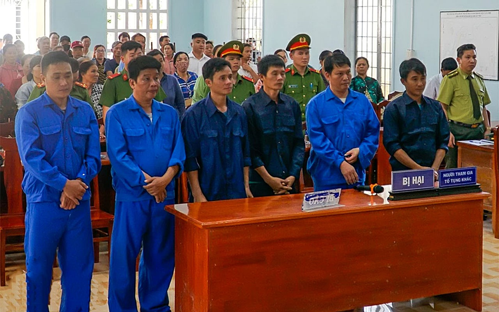

More than 20 years in prison for 6 people who illegally hunted wild animals, resisted officers on duty and intentionally caused injury at Cat Tien National Park (Tan Phu district).
On March 12, the People's Court of Tan Phu district (Dong Nai province) held a mobile trial to trial the case of resisting public duty and intentionally causing injury to 6 defendants including: Le Anh Tuan, Nguyen Van Loc, Nguyen Van Tho, Tran Van Tuan, Tran Van Truong, Dinh Van Hung. The case happened at Cat Tien National Park.
When discovered, defendants Dinh Van Hung and Nguyen Van Tho used weapons such as knives and wooden sticks to beat and slash three rangers, Chiu Van Hai (injury rate 10%), Pham Ngoc Tuan. (injury rate 4%) and Luong Van Bao (injury rate 2%) to free their accomplices.